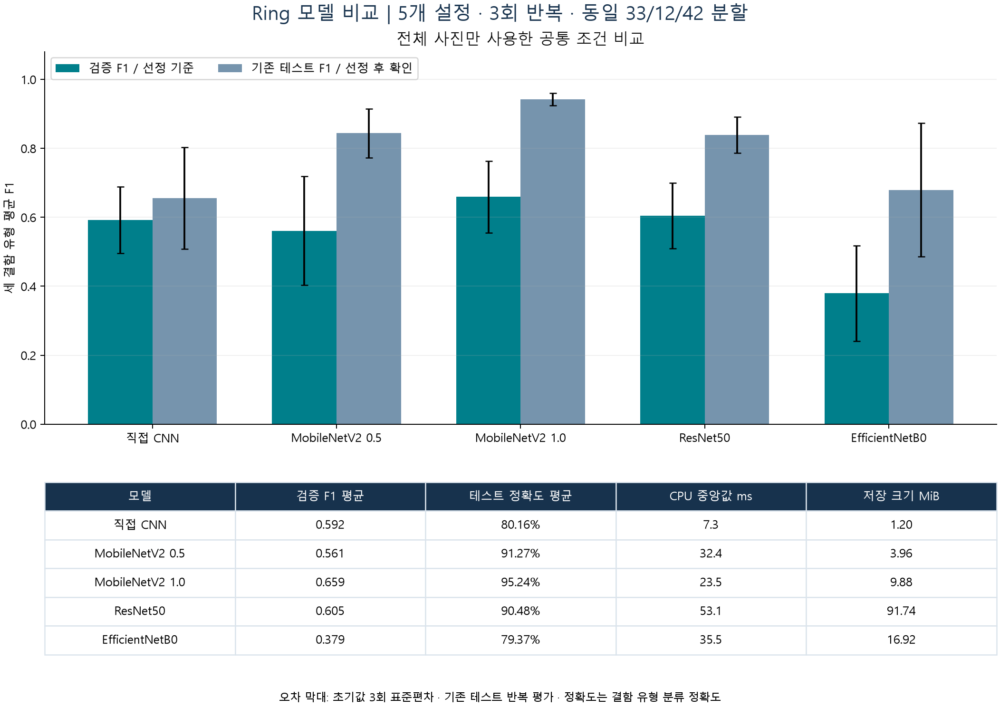
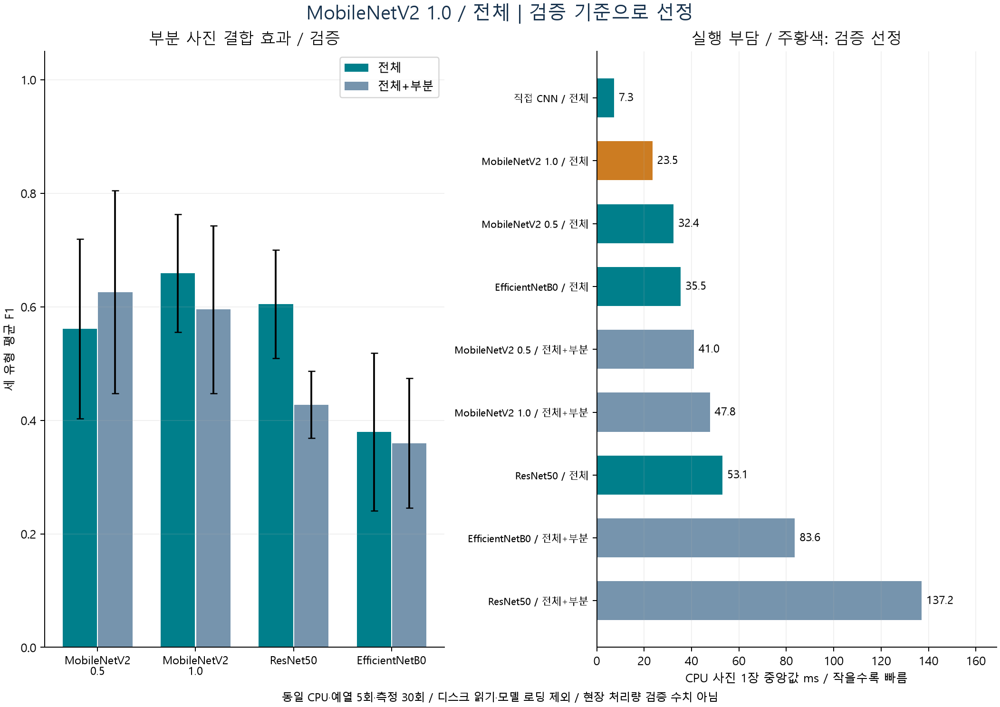
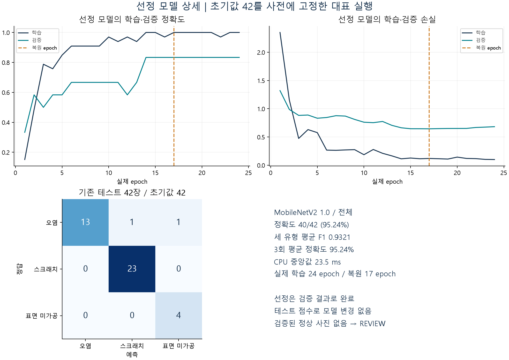

검증 기준 최종 선정: MobileNetV2 1.0 / 전체. 검증 유형별 평균 F1 0.6591.
이번 공통 조건에서는 MobileNet 계열이 검증 기준으로 선정됐다. 다른 모델과의 비교 없이 우수성을 주장한 기존 설명과 구분한다.
## 실험에서 실제로 수행한 일
- 직접 CNN, MobileNetV2(폭 0.5/1.0), ResNet50, EfficientNetB0의 5개 설정을 비교했다.
- 직접 CNN 전체 사진 1조건과 전이학습 4설정 × 전체/전체+부분 2조건, 총 9조건을 초기값 42·123·2026으로 반복했다.
- 실제 학습은 27회다. 직접 CNN 3회는 전체 가중치를, 전이학습 24회는 고정된 ImageNet 특징 위의 분류층을 학습했다. 특징 추출부 미세조정 실험은 아니다.
- 기존 학습 33장·검증 12장·테스트 42장 분할과 사진 해시를 유지했다. 증강으로 사진 수를 늘려 집계하지 않았다.
- 160×160, 공통 분류층, 클래스 가중치, 학습률·최대 epoch·조기 종료 규칙을 사전 고정했다. 모델마다 공식 입력 정규화를 적용했다.
| 선정 | 모델 | 입력 | 검증 F1 평균 | 테스트 정확도 평균 | 테스트 F1 평균 | 42번 초기값 정답 | CPU 중앙값(ms) | 저장 파일(MiB) |
|---|---|---|---|---|---|---|---|---|
| ● | MobileNetV2 1.0 | 전체 | 0.659 ± 0.104 | 95.24% ± 0.00%p | 0.942 ± 0.017 | 40/42 | 23.5 | 9.88 |
| MobileNetV2 0.5 | 전체+부분 | 0.626 ± 0.179 | 88.89% ± 6.87%p | 0.828 ± 0.069 | 39/42 | 41.0 | 5.42 | |
| ResNet50 | 전체 | 0.605 ± 0.095 | 90.48% ± 2.38%p | 0.839 ± 0.052 | 39/42 | 53.1 | 91.74 | |
| MobileNetV2 1.0 | 전체+부분 | 0.595 ± 0.148 | 86.51% ± 11.00%p | 0.801 ± 0.186 | 31/42 | 47.8 | 11.34 | |
| 직접 CNN | 전체 | 0.592 ± 0.096 | 80.16% ± 8.36%p | 0.656 ± 0.147 | 37/42 | 7.3 | 1.20 | |
| MobileNetV2 0.5 | 전체 | 0.561 ± 0.158 | 91.27% ± 3.64%p | 0.844 ± 0.071 | 37/42 | 32.4 | 3.96 | |
| ResNet50 | 전체+부분 | 0.427 ± 0.059 | 89.68% ± 1.37%p | 0.848 ± 0.045 | 38/42 | 137.2 | 94.09 | |
| EfficientNetB0 | 전체 | 0.379 ± 0.139 | 79.37% ± 9.62%p | 0.679 ± 0.193 | 37/42 | 35.5 | 16.92 | |
| EfficientNetB0 | 전체+부분 | 0.360 ± 0.114 | 83.33% ± 8.58%p | 0.705 ± 0.177 | 39/42 | 83.6 | 18.38 |
● 선정은 검증 점수 기준. 테스트 결과로 모델을 바꾸지 않았습니다. ±는 초기값 3회의 표준편차입니다.



# Ring 모델 비교 실험 결과 / 2026-11-27
검증 기준 최종 선정: MobileNetV2 1.0 / 전체. 검증 유형별 평균 F1 0.6591.
이번 공통 조건에서는 MobileNet 계열이 검증 기준으로 선정됐다. 다른 모델과의 비교 없이 우수성을 주장한 기존 설명과 구분한다.
## 실험에서 실제로 수행한 일
- 직접 CNN, MobileNetV2(폭 0.5/1.0), ResNet50, EfficientNetB0의 5개 설정을 비교했다.
- 직접 CNN 전체 사진 1조건과 전이학습 4설정 × 전체/전체+부분 2조건, 총 9조건을 초기값 42·123·2026으로 반복했다.
- 실제 학습은 27회다. 직접 CNN 3회는 전체 가중치를, 전이학습 24회는 고정된 ImageNet 특징 위의 분류층을 학습했다. 특징 추출부 미세조정 실험은 아니다.
- 기존 학습 33장·검증 12장·테스트 42장 분할과 사진 해시를 유지했다. 증강으로 사진 수를 늘려 집계하지 않았다.
- 160×160, 공통 분류층, 클래스 가중치, 학습률·최대 epoch·조기 종료 규칙을 사전 고정했다. 모델마다 공식 입력 정규화를 적용했다.
- 모델·입력 구성을 검증 점수 3회 평균으로 선정하고 selection_lock.json을 저장한 다음 테스트 사진을 디코딩하고 점수를 계산했다.
- 동점은 검증 정확도, 총 파라미터 수, 설정 이름 순서로 처리했다. 내보내기 초기값 42는 학습 전에 고정했다.
## MobileNet을 검토한 이유와 최종 선정의 구분
학습 사진 33장은 사전학습 특징을 활용한 전이학습을 검토할 이유다. MobileNet의 경량성은 CPU 실행을 고려한 후보 선정 이유다. 데이터가 적다는 점만으로 MobileNet이 다른 전이학습 모델보다 낫다고 결론낼 수 없다.
기존 코드에 다른 계열 모델과의 선정 비교 기록은 없었다. 이번 보고서는 최초 선택 이유를 사후에 꾸미는 대신 실제 비교 결과를 추가한다.
최종 선정은 위 검증 결과를 따른다. CPU 시간과 크기는 같은 장비에서 측정한 보조 정보이며, 실제 생산 처리량을 검증한 수치는 아니다.
## 비교 결과
전체 숫자는 comparison_all.csv, 발표용 요약은 presentation_comparison.csv에 있다. ± 값은 같은 분할의 초기값 3회에 대한 표본 표준편차이며 교차검증이나 신뢰구간이 아니다.
선정 모델 입력 검증 F1 평균 테스트 정확도 평균 테스트 F1 평균 42번 초기값 정답 CPU 중앙값(ms) 저장 파일(MiB)
● MobileNetV2 1.0 전체 0.659 ± 0.104 95.24% ± 0.00%p 0.942 ± 0.017 40/42 23.5 9.88
MobileNetV2 0.5 전체+부분 0.626 ± 0.179 88.89% ± 6.87%p 0.828 ± 0.069 39/42 41.0 5.42
ResNet50 전체 0.605 ± 0.095 90.48% ± 2.38%p 0.839 ± 0.052 39/42 53.1 91.74
MobileNetV2 1.0 전체+부분 0.595 ± 0.148 86.51% ± 11.00%p 0.801 ± 0.186 31/42 47.8 11.34
직접 CNN 전체 0.592 ± 0.096 80.16% ± 8.36%p 0.656 ± 0.147 37/42 7.3 1.20
MobileNetV2 0.5 전체 0.561 ± 0.158 91.27% ± 3.64%p 0.844 ± 0.071 37/42 32.4 3.96
ResNet50 전체+부분 0.427 ± 0.059 89.68% ± 1.37%p 0.848 ± 0.045 38/42 137.2 94.09
EfficientNetB0 전체 0.379 ± 0.139 79.37% ± 9.62%p 0.679 ± 0.193 37/42 35.5 16.92
EfficientNetB0 전체+부분 0.360 ± 0.114 83.33% ± 8.58%p 0.705 ± 0.177 39/42 83.6 18.38
## 최종 선정 모델의 고정 초기값 42 결과
- 유형 정확도: 40/42 = 95.24%
- 세 유형 평균 F1: 0.932061
- CPU 사진 1장 중앙값: 23.53 ms; p95 26.32 ms
- 입력 준비·모델 전처리·특징 추출·분류를 포함하고 디스크 읽기와 모델 로딩은 제외했다. 예열 5회 뒤 30회 측정했다.
- 선정 파일은 selected_model_config.json이다. 기존 models/ring_cnn_final.keras, quality_upgrade 가중치, 웹·Unity 모델 연결을 바꾸지 않았다.
## 기존 결과와의 관계 및 한계
- 기존 256×256 기준 CNN: 80.95%, F1 0.5678.
- 기존 MobileNet 전체+부분·여러 층 평균/최대 특징: 92.86%, F1 0.8914.
- 위 두 값은 보존된 과거 실험 참고값이다. 이번 공통 조건은 마지막 층 평균 특징과 공통 분류층을 쓰므로 같은 모델 행처럼 합치거나 모델 교체만의 효과로 해석하지 않는다.
- 테스트 42장은 이전에 평가했던 자료다. 이번 작업에서 선정 잠금을 지켰어도 새로운 외부 평가 자료가 되는 것은 아니다.
- 검증 12장, 테스트의 표면 미가공 4장은 작다. 3회 초기값 반복은 데이터 분할의 불확실성을 해결하지 못한다.
- 검증된 정상 사진이 없어 정상/불량 탐지 성능, 불량 차단율, 실제 손실 절감액은 평가하지 않았다. 모든 추론 상태는 REVIEW다.
- 이번 비교는 160×160·고정 ImageNet 특징 조건이다. 각 모델의 최적 해상도·증강·미세조정까지 탐색한 결과가 아니며, 검증 평균의 차이를 통계적으로 확정된 우열로 해석하지 않는다.
- 저장 파일 크기는 encoder와 분류기 .keras 파일의 합이며 분류기 학습용 optimizer 상태를 포함한다. 순수 추론 가중치 크기나 실제 실행 메모리와 구분한다.
## 재현과 증거
- 구현: notebooks/ring/02_Ring_DeepLearning_Final.ipynb 마지막 Ring 비교 절. 기본 실행 off.
- 실행: .venv/Scripts/python.exe outputs/cleanup_records/ring_model_comparison_2026-11-27/run_notebook.py all
- 학습 흔적: runs/*_history.json·csv, training_events.jsonl, 노트북 실제 출력, models/ring_model_comparison/2026-11-27/.
- 예측 근거: predictions/*_validation.csv 및 *_test.csv. 초기 가중치 출처·크기·해시는 data/external/ring_model_comparison/2026-11-27/source_metadata.json.
- 보존 기록: archive/2026-11-27_before_ring_model_comparison/MANIFEST.json.
공식 참고: https://keras.io/2/api/applications/mobilenet/ · https://keras.io/2/api/applications/resnet/ · https://keras.io/2/api/applications/efficientnet/ · https://keras.io/guides/transfer_learning/ · https://huggingface.co/datasets/VISION-Workshop/VISION-Datasets